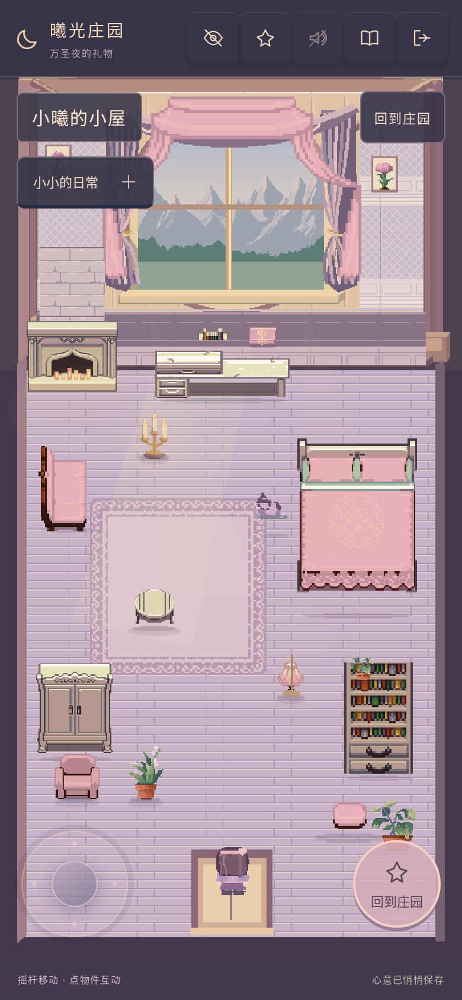
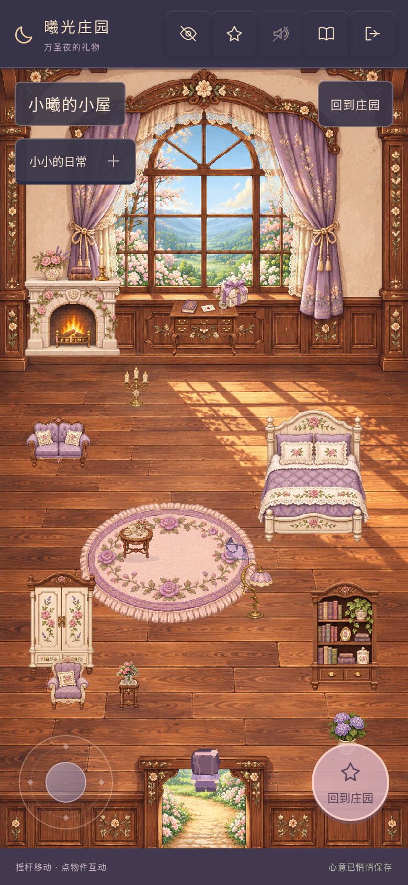
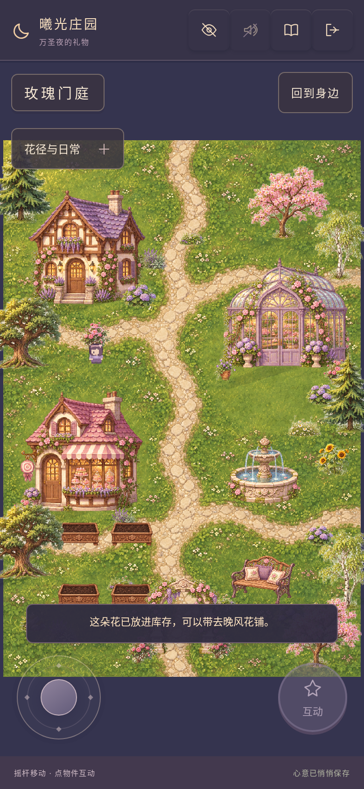
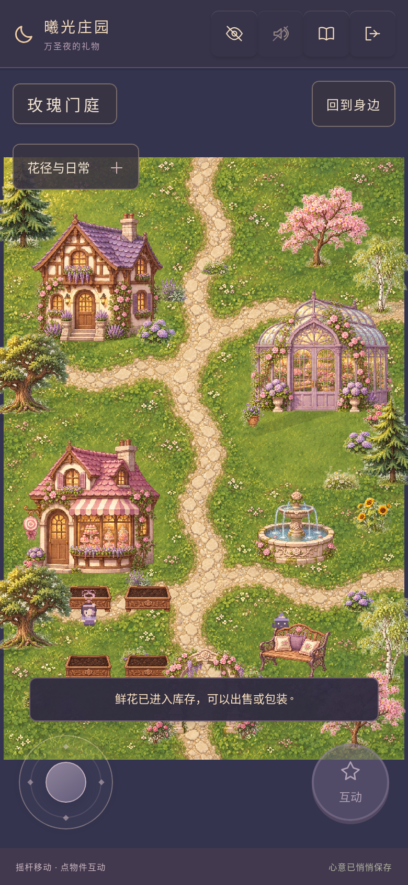
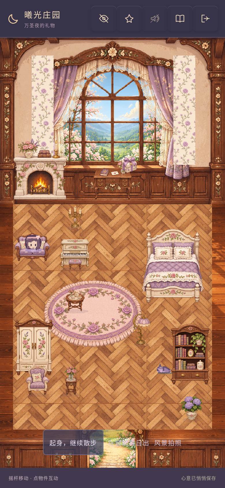
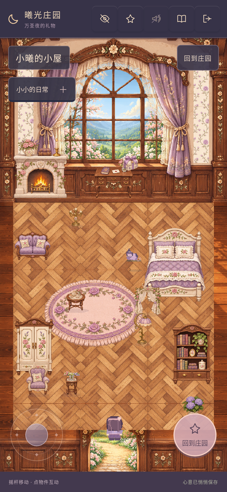
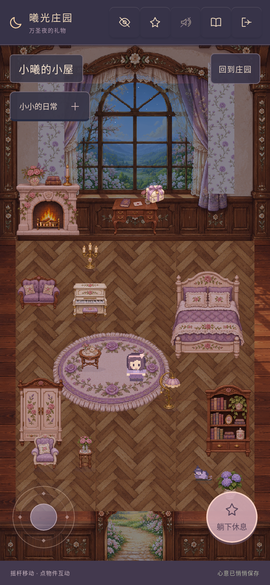
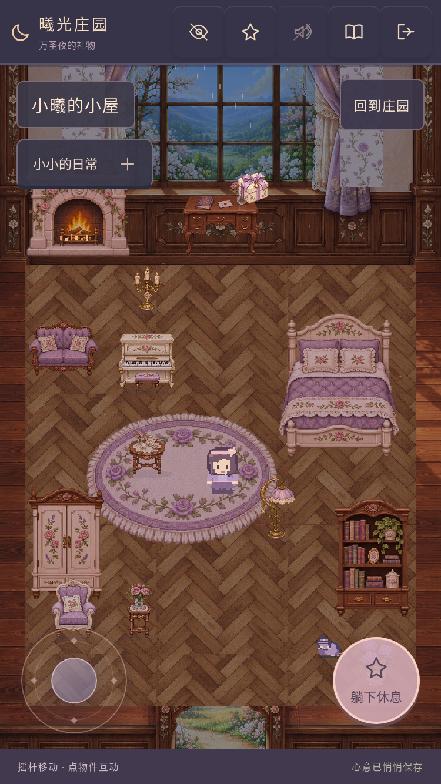

推开门，是属于小曦的小屋
新门庭已接为正式默认庄园，小屋开始首轮高清重制。全部图片来自实际Phaser运行，不是素材图或概念图。
同一手机视口 · 小屋前后
390×844/DPR2、相同清晨、初始家具布局及门口站位。新建筑底板与家具等比显示，镜头不拉伸。动态猫咪的位置可能不同。




默认新庄园与实际花圃




家具可以使用



材质、夜晚与小屏幕






已经接通的玩法
花圃使用原plots；三棵树使用原魔法糖索引，奖励只领一次。房门通花铺、小屋、工坊，花径通花园、花海、湖畔，石径通遗迹。换装、收藏和技能可从庄园地图打开。
小屋的茶桌、钢琴、椅子、灯、帘、猫窝、花架、衣柜、书架、床、礼物和信件可使用。原摆放、翻转、收起、换色、天气与单存档保留。
真实测试、资源与当前边界
100个Node测试通过；Chromium/WebKit实际操作与严格断网回归通过。家具编辑中不会因发现更新自动刷新。原始验证记录保留不同阶段的真实缓存字节与纹理数量。
最终发行清单94项、23,716,802字节。所有新增运行图本地打包，无损WebP逐像素对应PNG；素材尺寸、来源与哈希保留。未新增第三方下载或商业游戏截图。
本轮不是全地图完成。原32×40角色仍需后续细化，夜景尚非专门重绘的整套原画，墙纸是装饰条，部分家具足迹偏保守；森林等区域继续按全图规划推进。没有声称实体iPhone稳定60帧。